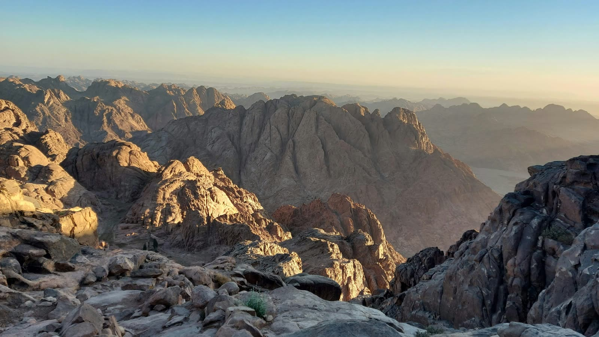
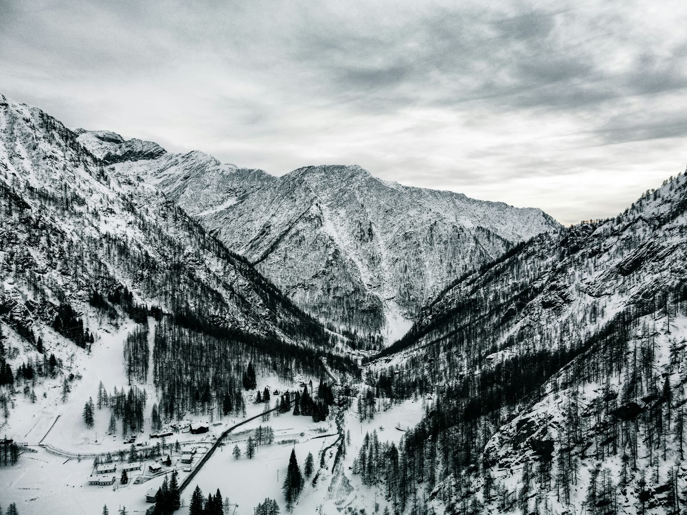

Full automotive restoration — chassis reinforcement, rust removal, mechanical systems teardown and reassembly. Led all research, resource acquisition, and hands-on precision fabrication alongside my brother.

Wearable medical device tracking vitals — heart rate, blood pressure, respiratory patterns & vocal activity. Designed in AutoCAD, programmed in C++. Patent & MIT URTC publication in progress.
Longhorn Engineering Summer Camp — designed and built a functional model roller coaster applying structural analysis, material selection, and mechanical force calculations.
9-week intensive software development program. Built multiple Python projects using intermediate-to-advanced concepts. Professional development workshops covering time management and industry readiness.
American Institute of Architects research internship — independent financial analysis of UT Austin, exposure to startup architecture & engineering firms, and applied mechanical engineering in real-world construction settings.
Terminal-based banking application built with Python & SQLite — account creation, deposits, withdrawals, wire transfers, overdraft protection, interest calculation, and a 40-test unittest suite. Zero external dependencies.

Multi-modal AI platform for mechanical engineers — split-screen workspace, guided onboarding, proprietary RAG knowledge base built from FEA literature, and structural analysis with shown calculations. Built with React, FastAPI, LiteLLM, and Pinecone.
Personal knowledge graph built in Obsidian that gives Claude persistent memory across every conversation — wiki-linked markdown notes, structured vault schema, and a visual graph of projects, tools, and references.
Local analytics dashboard that reads Claude Code's JSONL transcripts and visualizes token usage, cost estimates, and session history. Bug-fixed, retrofit to the Alpine Dawn theme, and extended with true-live auto-rescan that updates every 30s.